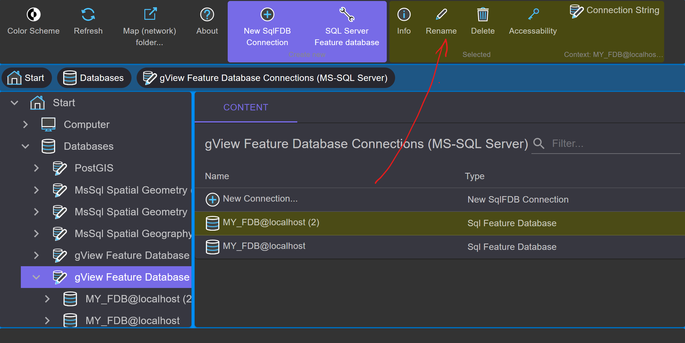

Anlegen einer MS SQL Feature Database¶
Bei dieser Datenbank handelt es sich um ein proprietäres Format und kann nur mit gView GIS verwendet werden. Der Vorteil ist jedoch die hohe Performance bei großen Datenmengen. Außerdem können mit diesem Format Imagekataloge in einer komfortablen graphischen Oberfläche erstellt und verwaltet werden. Voraussetzung zur Erstellung einer Datenbank ist ein MS SQLServer 2008 oder höher. Wird die kostenlose Express Variante von MS SQL verwendet, gelten die entsprechenden Einschränkungen des Servers (max. 4GB pro Datenbank, …). Die Feature Database Funktionalität wird dadurch aber nicht eingeschränkt.
Bemerkung
Der hier gezeigte Weg bezieht sich auf eine gView Feature Database in SQLServer.
Die Erstellung von gView Feature Database in Postgres erfolgt analog.
Um eine gView Feature Database auf Basis von SQLite zu erstellen, muss zuerst an die
Stelle im Filesystem navigiert werden, wo die Datenbank angelegt werden sollte. Im Context Menü
kann dort dann der Punkt Create New: SQLite Feature Database ausgewählt werden.
Um eine neue Feature Database anzulegen, wählen Sie in der Baumansicht den
Knoten Database / gView Feature Database Connections (MS-SQL Server) aus:

In der Werkzeugleiste wird im Context Block Create new das Werkzeug SQL Server Feature Database
angeboten. Ein Klick darauf öffnet folgenden Dialog:

Stellen Sie hier die Verbindung zur SQL Server Instanz ein. Durch den Verbindungstyp wird angeben, ob die Anmeldung über Windows Authentifizierung oder über Benutzername und Passwort erfolgen soll. Der Datenbankname vollendet die Eigenschaften der neuen Datenbank.
Nach Bestätigung mit OK wird die Datenbank mit allen notwendigen Tabellen angelegt. Ist
das Erstellen erfolgreich, zeigt der Data Explorer das neue Datenbankicon im Contents-Bereich an:

Die Icons im Contents-Bereich werden immer mit einem Doppelklick geöffnet. Sie können so
auch ein Verbindungsicon auf eine bestehende Feature Database erstellen. Doppelklicken Sie
hierzu einfach das Icon Neue Verbindung erstellen…

So können noch weitere Icons auf die Beispieldatenbank mit Administratorrechten erstellen werden:
Über die Kontext-Werkzeugleiste eines Icons, kann dieses schließlich noch umbenannt werden:

Im nächsten Schritt soll ein Dataset für Geodaten angelegt werden. Datasets sind Sammlungen von Featureklassen, die gleiche Eigenschaften besitzen. Zum Beispiel können alle Klassen, die dem Kataster zugehörig sind, in ein Dataset mit der Bezeichnung KATASTER gelegt werden.
Bemerkung
Alle Featureklassen eines Datasets verwenden das gleiche räumliche Bezugssystem! Wenn sich Daten in unterschiedlichen Bezugssystemen befinden, sind die Featureklassen auf mehrere Datasets aufzuteilen. Dabei darf ein Featureklassenname in einer Datenbank nur einmal vorkommen.
Um ein neues Dataset anzulegen, doppelklicken Sie auf das Datenbankicon
(MY_FDB@localhost (admin)) im Contents-Bereich. Da noch keine Datasets existieren, erscheint nur
ein leerer Bereich. Im Kontext Block Create new in der Werkzeugleiste wird ein
Werkzeug SQL Feature Database Dataset angeboten, das folgenden Dialog öffnet:

Als Namen kann man hier Dataset1 vergeben. Als Typ bleibt Feature Dataset.
Das bedeutet, dass in diesem Dataset Vektordaten für alle Geometrietypen (Punkt, Linie,
Fläche) abgelegt werden können. Der Typ Image Dataset ist für das Anlegen von
Imagekatalogen gedacht und wird im nächsten Abschnitt behandelt.
Die zweite Registerkarte des Dialogs bestimmt das räumliche Bezugssystem für das Dataset. Wie oben schon erwähnt, ist das Bezugssystem nur auf dieser Ebene bestimmbar. Alle Featureklassen in einem Dataset erben diese Eigenschaft.
Ein räumliches Bezugssystem setzt sich immer aus zwei Teilen zusammen (Koordinatensystem und
geodätisches Datum), wobei der zweite Teil theoretisch auch weggelassen werden
kann. Bei der Projektion wird dann allerdings kein Datumsübergang angebracht. Mit dem
Select kann aus vordefinierten Systemen gewählt werden:

Um die Liste einzuschränken, kann ein Suchbegriff (z.B. Austria, EPSG Code) eingegeben werden. Ein Klick auf das gewünschte Koordinatensystem schließt den Dialog. Die Vorgehensweise für das geodätische Datum ist identisch. Bei einigen Projektionen ist das Datum bereits inkludiert. Nach erfolgter Auswahl sieht der Dialog etwa wie folgt aus:

Über die dritte Registerkarte Räumlicher Index lässt sich ein Prototyp für den räumlichen
Index des Datasets anlegen. Wenn immer eine neue Featureklasse angelegt wird, wird dieser
Prototyp vorgeschlagen. Da später für jede Featureklasse ein eigener Index angelegt werden
kann, ist die Angabe dieses Prototyps allerdings optional.

Nach der Bestätigung des Dialogs wird das neue Dataset erzeugt:

Über die Kontextwerkzeuge des Dataset-Icons kann noch eine Namensänderung durchgeführt werden. Es ist ebenso möglich, die Parameter für das räumliche Bezugssystem nachträglich zu ändern.
Bemerkung
Bei einer nachträglichen Änderung des räumlichen Bezugssystems werden die im Dataset befindlichen Featureklassen nicht projeziert. Das heißt, die Koordinaten der Features bleiben gleich. Es ändern sich nur die vom Dataset geerbten Projektionsparameter.
Im nächsten Schritt sollten Daten aus einem ESRI Shapefile in die SQL Feature Database kopiert werden. Dazu navigiert man über die Baumansicht in das Verzeichnis, in dem sich die Shape-Daten befinden.

Zuerst müssen die gewünschten Dateien ausgewählt werden. Mit der Umstell- (Shift) bzw.
Steuerungstaste (Ctrl) können in gewohnter Weise auch mehrere Dateien markiert werden.
Im Kontextbereich der Werkzeugleiste wird der Button Copy angezeigt. Klickt man auf
den Button, werden die Daten in die Zwischenablage kopiert.
Bemerkung
Die Daten werden nicht in die Windows-Zwischenablage, sondern in die gView.DataExplorer Zwischenablage der aktuellen Session kopiert. Daten können nicht in andere Programme kopiert werden. Es kann auch nicht von einem gView.DataExplorer Fenster in ein anderes kopiert werden.
Navigiert man zurück zum vorhin erstellten Dataset, ist der Contents-Bereich des Datasets noch leer.
Nach einem Klick auf den Paste-Button im Kontextbereich der Werkzeugleiste erscheint folgender Dialog:
Mit dem Start-Button wird der Kopiervorgang gestartet:
Ist der Kopiervorgang erfolgreich abgeschlossen, kann der Dialog mit Close geschlossen werden,
und die neuen Featureklassen werden angezeigt.
Doppelklicken Sie nun auf eines der neu erstellten Featureklassen-Icons. In der Contents-Ansicht erscheinen die Felder mit den entsprechenden Feldtypen:

Außerdem erscheint neben FeatureClass noch eine weitere Registerkarte: Data View.
Diese dient zum Anzeigen des Inhalts der Featureklassen. Es werden sowohl Geometrie als
auch die Daten angezeigt:

Das Navigieren in der Karte erfolgt wie im gView.Carto mit gedrückter Maustaste (Verschieben) oder Mausrad (zoomen). Der Tabellenbereich kann mit den Pfeiltasten vergrößert bzw. verkleinert werden.
Neben dem Import von Daten in eine SQL Feature Database können diese Daten auch wieder exportiert werden. Dazu geht man umgekehrt vor wie oben beschrieben. Erst die Featureklassen markieren und kopieren. Danach zum Zielordner navigieren und dort einfügen. Kopiert man Daten zurück ins Dateisystem, muss im Kopieren-Dialog noch das Ausgabeformat (Outputformat) angegeben werden:

Neben ESRI Shape File ist noch das Format OGC GML möglich. Beide Formate sind von den meisten GIS-Systemen lesbar und eigenen sich somit sehr gut zum Austausch von Daten zwischen verschiedenen Systemen.